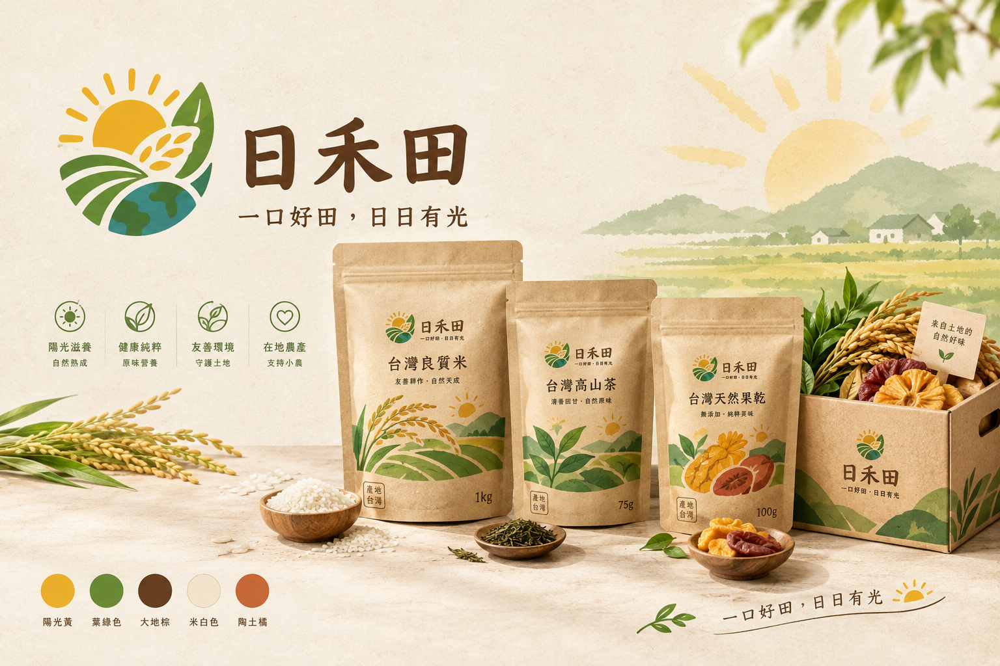
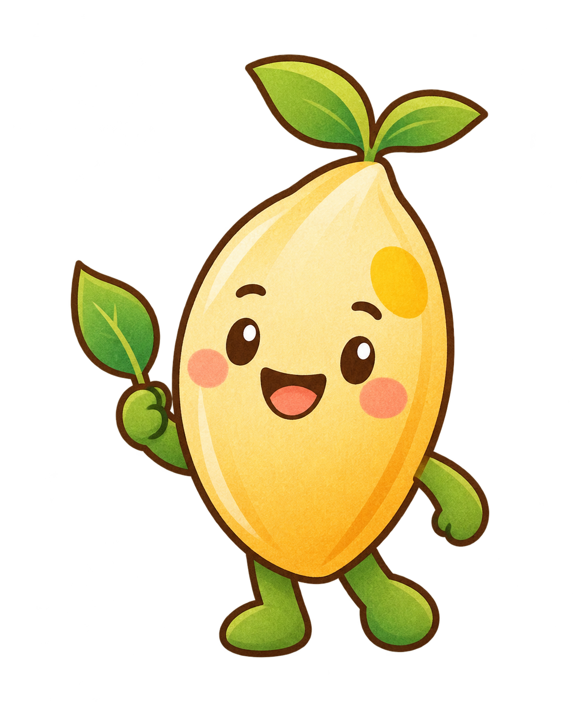

01 / 03
日常主食
台灣良質米
粒粒飽滿、口感清爽，適合成為每天餐桌上的安心主角。實際產地與米種，請依購買商品包裝標示為準。
建議情境：一家人的日常晚餐
TAIWAN FARM · EVERYDAY GOODNESS
日禾田把陽光、土地與農人的用心，放進每一份日常。從產地出發，選一份讓自己安心、也讓土地喘口氣的好味道。


嗨！我是小禾FROM
GOOD
LAND
OUR HARVEST
先從一份熟悉的味道開始，
慢慢認識土地的個性。
日常主食
粒粒飽滿、口感清爽，適合成為每天餐桌上的安心主角。實際產地與米種，請依購買商品包裝標示為準。
建議情境：一家人的日常晚餐
OUR GENTLE PROMISE
點選下方圖示，看看日禾田想把什麼留給下一季。
從減少不必要的包裝開始，讓每一次選擇都更靠近友善環境。
THE STORY OF 日禾田
我們相信，一份好的農產品不只是味道好，也應該讓人知道它從哪裡來、由誰照顧，最後又會留下什麼。
日禾田以台灣農作為起點，和在地生產者一起，把自然熟成的好風味分享給重視生活品質、關心環境，也願意支持小農的你。
A LITTLE LIGHT
讓陽光、土地與一點點可愛，陪你認識日禾田。
A LITTLE FARM QUIZ
選一個最接近你現在心情的答案，看看日禾田為你推薦哪份日常。
今天的你，比較想要？